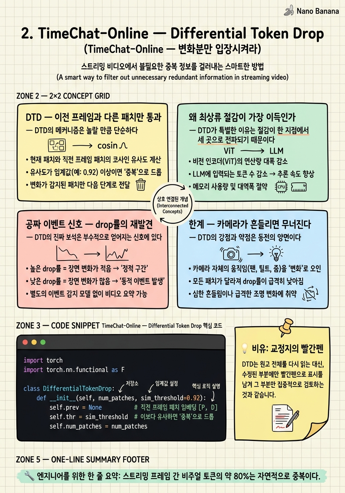

TimeChat-Online — Differential Token Drop

🎯 학습 목표
- 비주얼 토큰 중복이 왜 스트리밍에서 80%에 달하는지 설명한다
- DTD가 prefill·KV·attention을 동시에 줄이는 이유를 안다
- 패치 차분 임계값이 정확도-절감 트레이드오프에 미치는 영향을 이해한다
- drop률 급증을 트리거 프라이어로 재활용하는 아이디어를 설명한다
- DTD가 실패하는 도메인(에고센트릭·드론)을 식별한다
이제 3단계 지도의 최상류, Stage ① 토큰 다이어트로 들어간다. 첫 논문 TimeChat-Online(ACM MM 2025)은 단 하나의 관찰로 요약된다 — 스트리밍 비디오는 프레임 간 변화가 거의 없어서, 비주얼 토큰의 약 80%가 자연적으로 중복이다.
CCTV 화면을 떠올려보라. 초당 여러 프레임이 들어오지만 대부분은 직전 프레임과 거의 똑같다. 배경 벽, 바닥, 가만히 있는 물체는 매 프레임 동일한 토큰을 만들어낸다. 이 중복 토큰을 전부 LLM에 밀어넣는 것은 같은 문장을 100번 복사해 읽히는 것과 다름없는 낭비다.
TimeChat-Online의 DTD(Differential Token Drop)는 이 낭비를 최상류에서 잘라낸다. 그리고 이 챕터의 백미는 부수 효과에 있다 — 버려지지 않고 살아남는 토큰의 비율이 곧 "화면이 얼마나 변했는가"의 척도이므로, 별도 모듈 없이 이벤트 후보 시점을 공짜로 얻는다. 이 코스 내내 반복될 "압축 실패 = 이벤트" 패턴의 첫 사례다.
핵심 내용
DTD — 이전 프레임과 다른 패치만 통과
DTD의 메커니즘은 놀랄 만큼 단순하다.
1. 새 프레임이 들어오면, 각 패치(비주얼 토큰)를 이전 프레임의 같은 위치 패치와 비교한다.
2. 변화가 임계값보다 작은 패치는 LLM에 넣기 전에 그냥 버린다.
3. 변한 패치만 통과 → 정적 배경은 사라지고 움직임·변화만 남는다.
이것은 사람 눈의 주변시(peripheral vision)와 같은 원리다. 우리는 시야 전체를 매 순간 새로 인식하지 않는다. 안정된 배경은 뇌가 "그대로일 것"이라 예측하고, 실제로 바뀐 곳에만 주의를 돌린다. DTD는 이 예측-차분 메커니즘을 토큰 수준에서 구현한 것이다.
주목할 점은 이 비교가 패치 단위라는 것이다. 프레임 전체를 통째로 버리거나 남기는 게 아니라, 한 프레임 안에서도 움직이는 사람 영역의 패치는 남기고 정지한 벽 패치는 버린다. 덕분에 "사람이 걷는 CCTV" 같은 부분 변화 장면에서도 효율적으로 작동한다.
왜 최상류 절감이 가장 이득인가
DTD가 특별한 이유는 절감이 한 지점에서 세 곳으로 전파되기 때문이다.
LLM에 들어가는 토큰 수 자체를 줄이면, 그 뒤의 모든 비용이 연쇄적으로 줄어든다.
- Prefill 연산 ↓ — 처리할 토큰이 적으니 매 프레임 prefill이 싸진다.
- KV cache 크기 ↓ — 저장할 토큰이 적으니 메모리가 덜 쌓인다.
- 이후 attention 비용 ↓ — 참조 대상이 적으니 모든 후속 연산이 가벼워진다.
이것이 "파이프라인 최상류에서 자르는 게 가장 이득이 크다"는 원리다. Stage ②의 기억 관리 기법들은 이미 쌓인 KV를 사후에 압축하지만, DTD는 애초에 덜 쌓이게 만든다. 그래서 DTD는 Stage ②의 어떤 기법과도 충돌하지 않고 그 앞에 그대로 얹을 수 있다 — 직교적(orthogonal)이라는 뜻이다.
비용 관점에서 상시로 지불하는 것은 "패치 비교" 연산뿐인데, 이것은 임베딩 차분과 임계값 비교라 LLM 포워딩에 비하면 거의 공짜다. 헐값의 비교로 비싼 LLM 입력을 80% 줄이는 교환이므로 언제나 남는 장사다.
공짜 이벤트 신호 — drop률의 재발견
DTD의 진짜 보석은 부수적으로 얻어지는 신호에 있다.
생각해보라. 평소엔 대부분의 패치가 드롭된다(변화 없음). 그런데 화면에 큰 변화가 생기는 순간 — 사람이 프레임에 들어오거나, 물체가 쓰러지거나, 장면이 전환되면 — 갑자기 살아남는 토큰의 비율이 급증한다.
즉 drop률(또는 그 역수인 survival률)의 시계열 자체가 "화면이 얼마나 변했는가"의 척도다. 별도의 장면 전환 탐지기나 이벤트 감지 모듈을 붙이지 않아도, 이미 계산하고 있는 drop률이 트리거 후보 시점을 공짜로 알려준다.
이것은 이 코스 전체를 관통하는 패턴의 첫 등장이다 — "압축이 안 되는 순간이 곧 이벤트다". 정보를 압축(중복 제거)하려는 시도가 실패하는 지점은, 정의상 새로운 정보가 유입된 지점이기 때문이다. 8장 Flash-VStream에서 "새 클러스터 생성 = 새 장면"으로, 10장 최종 아키텍처에서 "drop률을 게이트의 보조 입력으로" 다시 만나게 된다.
실무적으로는 drop률 시계열에 간단한 임계값이나 이동평균을 걸어, 뒤단 트리거의 recall을 끌어올리는 저비용 프라이어로 쓸 수 있다.
한계 — 카메라가 흔들리면 무너진다
DTD의 강점과 약점은 동전의 양면이다. "이전 프레임의 같은 위치 패치와 비교한다"는 전제는 카메라가 고정되어 있을 때만 성립한다.
카메라가 움직이면(에고센트릭 웨어러블, 드론, 손에 든 폰) 배경 전체가 프레임마다 위치를 바꾼다. 그러면 정적인 벽조차 "이전과 다른 위치의 다른 패치"로 잡혀 거의 모든 패치가 변화로 판정된다. drop률이 바닥을 치고, 절감 효과가 사라진다.
| 도메인 | 카메라 | DTD 효율 | |---|---|---| | CCTV·고정 감시 | 고정 | 매우 높음 (80%+ 드롭) | | 고정 웹캠·회의 | 거의 고정 | 높음 | | 핸드헬드·에고센트릭 | 흔들림 | 낮음 | | 드론·차량 주행 | 지속 이동 | 매우 낮음 |
따라서 DTD는 정적 CCTV류에 최적이고, 카메라 모션이 큰 도메인에서는 우회(bypass)하거나 모션 보상(optical flow로 patch를 정렬한 뒤 차분)을 앞에 둬야 한다. 10장 최종 아키텍처에서 "카메라 모션이 큰 도메인이면 L0는 bypass 스위치를 둔다"고 설계하는 이유가 바로 이 한계다.
핵심은 DTD가 만능이 아니라 가정에 기댄 저비용 기법이라는 점이다 — 가정이 맞는 곳에서는 압도적이고, 틀린 곳에서는 켜지 말아야 한다.
💡 비유로 이해하기
책의 2쇄를 찍기 전, 편집자가 1쇄와 2쇄 원고를 나란히 놓고 바뀐 곳에만 빨간 줄을 긋는다고 하자. 대부분의 페이지는 토씨 하나 안 바뀌었으니 그냥 넘긴다. 정말 수정된 문장에만 펜이 멈춘다.
식자공(LLM)에게 넘길 때, 편집자는 500페이지 전체를 다시 조판하라고 하지 않는다. 빨간 줄이 그어진 문장만 넘긴다. 조판 비용(prefill)도, 교정쇄 보관(KV cache)도, 대조 작업(attention)도 전부 바뀐 부분만큼으로 줄어든다.
그리고 흥미로운 부수 효과 — 빨간 줄이 갑자기 빽빽해지는 페이지는 "이 챕터가 대대적으로 개정됐다"는 신호다. 편집자는 따로 목차를 뒤지지 않아도, 빨간펜의 밀도만으로 어디가 크게 바뀌었는지 안다. 그게 바로 drop률이 주는 공짜 이벤트 신호다. 단, 누군가 책 전체를 다른 판형으로 재조판해 모든 글자의 위치가 밀렸다면(카메라 이동), 모든 줄에 빨간 줄이 그어져 이 방법은 무용지물이 된다.
💻 코드 예시
DTD의 핵심을 최소 구현으로 보자. 프레임을 패치 임베딩으로 받아, 이전 프레임과의 코사인 거리로 변화 패치만 통과시키고, 동시에 drop률을 이벤트 신호로 뱉는다.
import torch
import torch.nn.functional as F
class DifferentialTokenDrop:
def __init__(self, num_patches, sim_threshold=0.92):
self.prev = None # 직전 프레임 패치 임베딩 [P, D]
self.thr = sim_threshold # 이보다 유사하면 '중복'으로 드롭
self.num_patches = num_patches
def __call__(self, patch_emb: torch.Tensor):
"""patch_emb: [P, D] 현재 프레임 패치 토큰. 반환: (유지 토큰, drop률)."""
if self.prev is None: # 첫 프레임은 전부 통과 (기준선)
self.prev = patch_emb
return patch_emb, 0.0
# 같은 위치 패치끼리 코사인 유사도
sim = F.cosine_similarity(patch_emb, self.prev, dim=-1) # [P]
keep_mask = sim < self.thr # 변한 패치만 True
self.prev = patch_emb # 상태 갱신
kept = patch_emb[keep_mask] # LLM에 넘길 토큰
drop_rate = 1.0 - keep_mask.float().mean().item()
return kept, drop_rate
# --- 시뮬레이션: 정적 배경 + 30번째 프레임에 갑작스런 변화(이벤트) ---
dtd = DifferentialTokenDrop(num_patches=196)
base = torch.randn(196, 768)
for t in range(50):
frame = base + 0.01 * torch.randn(196, 768) # 평소: 미세 노이즈만
if t == 30:
frame[:120] += 2.0 * torch.randn(120, 768) # 이벤트: 절반 패치 급변
kept, drop = dtd(frame)
if t in (1, 29, 30, 31):
print(f"t={t:>2} kept={kept.shape[0]:>3}/196 drop_rate={drop:.2f}"
f"{' <-- EVENT!' if drop < 0.5 else ''}")
핵심은 sim < self.thr 한 줄이다 — 직전 프레임과 충분히 비슷한 패치는 마스크에서 걸러져 kept에서 빠진다. 평소에는 미세 노이즈뿐이라 대부분 드롭되어 drop_rate가 0.9 근처로 높게 유지되지만, t=30에서 절반 패치가 급변하면 drop_rate가 뚝 떨어진다(=survival 급증). 이 하락이 바로 공짜 이벤트 신호다. sim_threshold가 정확도-절감 손잡이다 — 높이면 더 공격적으로 버려 싸지지만 미세 변화를 놓치고, 낮추면 안전하지만 절감이 준다. 실전에서는 이 임계값을 도메인별로 튜닝하거나, 카메라 모션 감지 시 이 모듈을 통째로 bypass한다.
🏭 현업에서의 평가
✅ 시니어가 보는 것
- 최상류 절감(입력 토큰)이 하류 압축(KV)보다 왜 이득이 큰지 파이프라인 전파로 설명하는가
- 정확도-절감 트레이드오프를 임계값이라는 튜닝 손잡이로 구체화하는가
- 기법의 가정(고정 카메라)을 명시하고, 깨지는 도메인을 스스로 지적하는가
⚠️ 레드 플래그
- "토큰 드롭은 항상 좋다"며 에고센트릭·드론에서의 붕괴를 놓침
- drop률을 그냥 버리는 지표로만 보고 이벤트 신호로 재활용할 생각을 못 함
- 프레임 단위 드롭과 패치 단위 드롭의 차이를 구분하지 못함
🎤 예상 인터뷰 질문
- 고정 CCTV에서 잘 되던 토큰 드롭이 바디캠에서 무너졌다. 원인과 두 가지 보완책은?
- drop률 시계열을 이벤트 탐지에 쓰려면 어떤 후처리(임계값·평활)가 필요한가?
- 토큰을 80% 버렸는데 특정 이벤트의 정확도만 떨어졌다. 어떻게 진단하겠는가?
✨ 핵심 요약
80%는 중복
스트리밍 프레임 간 비주얼 토큰의 약 80%는 자연적으로 중복이다.
패치 단위 차분
이전 프레임 같은 위치 패치와 비교해 변한 패치만 LLM에 통과시킨다.
삼중 절감
입력 토큰을 줄이면 prefill·KV·attention이 동시에 줄어든다 — 최상류가 최고 이득.
직교성
DTD는 Stage ② 기억 기법 앞에 그대로 얹을 수 있다 — 서로 충돌하지 않는다.
공짜 이벤트 신호
drop률 급락(survival 급증)은 별도 모듈 없는 장면 전환·이벤트 후보 신호다.
임계값 손잡이
유사도 임계값이 정확도-절감 트레이드오프를 조절하는 단일 파라미터다.
고정 카메라 가정
카메라가 흔들리면 전 패치가 변화로 잡혀 무너진다 — 정적 CCTV에 최적.